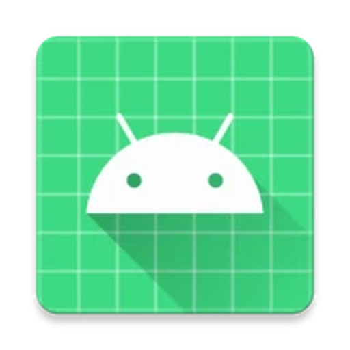

NoCallCenterL'app Android gratuita che intercetta i call center e i bot telefonici prima del primo squillo, usando WhatsApp come filtro umano per corrieri e amici.
Le liste nere falliscono perché i call center clonano numeri sempre nuovi. NoCallCenter ribalta le regole con un test immediato.
Un numero non salvato nei tuoi contatti chiama il tuo telefono.
La chiamata viene chiusa in silenzio all'istante tramite CallScreeningService nativo.
I centralini automatici non sanno usare WhatsApp e non leggono gli SMS. Chiamata persa per sempre!
Legge l'SMS automatico di cortesia e ti scrive all'istante su WhatsApp.
Progettata per garantire la massima privacy e zero costi.
A differenza di Truecaller, la tua rubrica e i tuoi registri chiamate non lasciano mai il telefono. Nessun cloud, nessun server, nessun dato tracciato.
Hai solo 50 SMS al mese? Imposta la tua soglia (es. 40 SMS) e il giorno di rinnovo. Raggiunto il limite, l'app continua a silenziare senza inviare SMS.
I centralini insistenti non consumeranno i tuoi SMS: l'app invia al massimo 1 SMS ogni 48 ore allo stesso numero.
Attiva con un tocco il blocco delle chiamate provenienti da paesi Extra-UE o dall'estero per una protezione totale.
Un sistema integrato verifica periodicamente le nuove versioni rilasciate su GitHub e ti avvisa quando è disponibile un aggiornamento.
Nessun abbonamento da 30€ all'anno. NoCallCenter è software libero con licenza MIT sviluppato per passione e condiviso con la community.
Google applica la protezione "Impostazioni con restrizioni" alle app installate via APK. Ecco come sbloccare i permessi SMS in 30 secondi:
Scarica nocallcenter.apk da GitHub Releases, tocca il file e premi "Installa" (accetta la scansione di Google se richiesta).
All'avvio tocca "Apri Informazioni App" (oppure vai in Impostazioni > App > NoCallCenter), entra in Autorizzazioni e tocca SMS (comparirà l'avviso "Impostazione con restrizioni").
Torna indietro di una schermata su Informazioni app, tocca i 3 puntini verticali in alto a destra (⋮) e seleziona "Consenti impostazioni con restrizioni" confermando con PIN o impronta.
Rientra in Autorizzazioni > SMS e tocca "Consenti". Torna nell'app e impostala come App Identificativo Chiamata e Filtro Predefinita. Fatto!
Google impone restrizioni burocratiche severe sull'invio di SMS in background per le app di terze parti (consentendolo quasi solo all'app SMS principale) e impedisce link diretti per donazioni libere. La distribuzione indipendente tramite APK garantisce la totale libertà e assenza di intermediari.
La chiamata viene chiusa in silenzio, ma il mittente riceve subito l'SMS automatico. Una persona reale legge il messaggio e ti contatta all'istante su WhatsApp (o ti richiama). Un centralino robotico invece non può interagire con WhatsApp e la chiamata decade.
Quasi tutte le offerte mobili oggi includono SMS gratuiti. Se hai un piano con SMS limitati (es. 50 al mese), puoi configurare la tua soglia mensile nell'app: una volta raggiunta, NoCallCenter continuerà a bloccare le chiamate sospendendo l'invio degli SMS per proteggere il tuo credito.
No, mai. NoCallCenter non ha server, non richiede login e non ha strumenti di tracciamento o analytics. Tutto funziona al 100% sulla memoria interna del tuo dispositivo.